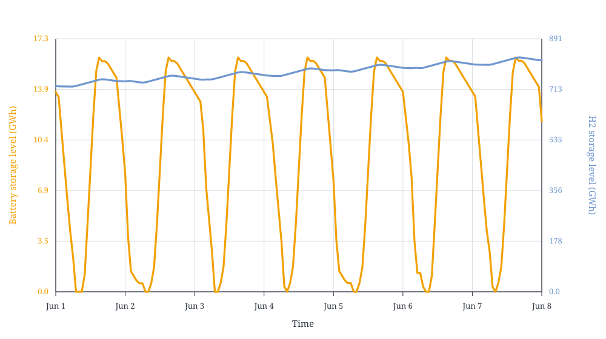

PV, Battery, And Hydrogen With A Coarse Hydrogen Mesh
Multi-mesh models are useful when one part of a system needs fine temporal detail while another part can be represented more coarsely.
The system has PV, battery storage, electricity consumption, an electrolyser, hydrogen storage, and hydrogen consumption, plus an electricity node and a hydrogen node.
The PV profile is fully synthetic and simplified, but it has both daily and seasonal variation. The battery can handle the day-night pattern, but the seasonal PV shortage has to be covered by hydrogen stored over much longer periods.
The code below builds the same system twice:
hourly: all components and nodes use the 8760-step hourly mesh as a reference case;mixed: only the hydrogen node, hydrogen consumption, and hydrogen storage use a 2190-step 4-hour mesh.
The electrolyser is modelled on the fine time mesh, including hydrogen production, but its hydrogen production is projected onto the coarser hydrogen node mesh when performing the node balance. This keeps the fast electricity-side structure while using fewer variables on the hydrogen side.
using Nosy
using HiGHS
import JuMP
import JuMP: set_silent
function build_power_hydrogen_case(h2_mesh)
power_mesh = TimeMesh(fill(1//1, 8760))
s = Sim(Model(HiGHS.Optimizer); mesh=power_mesh)
set_silent(model(s))
power = EnergyCarrier("electricity", s)
hydrogen = MassCarrier("hydrogen", s; energy=1.0)
normal_day = [
0.0, 0.0, 0.0, 0.0, 0.0, 0.03,
0.15, 0.35, 0.58, 0.78, 0.92, 1.0,
0.96, 0.86, 0.68, 0.45, 0.22, 0.06,
0.0, 0.0, 0.0, 0.0, 0.0, 0.0,
]
seasonal = [
0.35 + 0.65 * (0.5 + 0.5 * sin(2pi * (day - 80) / 365))
for day in 1:365
]
pv_profile = repeat(normal_day, 365) .* repeat(seasonal, inner=24)
snapshot = Snapshot(s)
electricity = Node("electricity", power, rule=:curtailed)
h2 = Node("hydrogen", hydrogen; mesh=h2_mesh)
pv = Component(
"PV",
ProfileSource(power, pv_profile; mesh=power_mesh),
[
VariableCapacity("output", energy),
FixedCost(:capex, "output", energy, 200_000.),
],
)
connect!(snapshot, pv, electricity)
battery = Component(
"battery",
BasicStorage(power, power, power, energy; eff_i=0.92, eff_o=0.92, mesh=power_mesh),
[
VariableCapacity("input", energy),
FixedCost(:capex, "input", energy, 100_000.),
Duration(4),
],
)
connect!(snapshot, battery, electricity)
power_demand_profile = fill(300., length(pv_profile))
power_demand = Component(
"power demand",
Demand(power, power_demand_profile; modifier=energy, mesh=power_mesh),
)
connect!(snapshot, power_demand, electricity)
electrolyser = Component(
"electrolyser",
BasicConverter(power, hydrogen; ratio=0.70, modifier=energy, mesh=power_mesh),
[
VariableCapacity("input", energy),
FixedCost(:capex, "input", energy, 200_000.),
],
)
connect!(snapshot, electrolyser, electricity)
connect!(snapshot, electrolyser, h2)
h2_consumption = Component(
"H2 consumption",
Demand(hydrogen, 1500.; modifier=mass, mesh=h2_mesh),
)
connect!(snapshot, h2_consumption, h2)
h2_storage = Component(
"H2 storage",
BasicStorage(hydrogen, hydrogen, hydrogen, mass; mesh=h2_mesh),
[
VariableCapacity("level", mass),
FixedCost(:capex, "level", mass, 1.0),
],
)
connect!(snapshot, h2_storage, h2)
optimize!(snapshot, cost(snapshot))
result = extract(snapshot)
return (
snapshot=snapshot,
result=result,
variables=JuMP.num_variables(model(s)),
constraints=JuMP.num_constraints(model(s); count_variable_in_set_constraints=false),
)
end
hourly_mesh = TimeMesh(fill(1//1, 8760))
h2_4h_mesh = TimeMesh(fill(4//1, 2190))
hourly = build_power_hydrogen_case(hourly_mesh)
mixed = build_power_hydrogen_case(h2_4h_mesh)The mixed model removes the hourly hydrogen storage and hydrogen node balance variables and constraints. In this case the reduction is substantial:
julia> hourly.variables, mixed.variables
(61324, 41614)
julia> 100 * (1 - mixed.variables / hourly.variables)
32.14076055051856
julia> hourly.constraints, mixed.constraints
(78840, 59130)A local run gives the following summary. Storage capacities are reported as maximum energy level.
<table> <thead> <tr> <th rowspan="2">Case</th> <th colspan="4">Capacity</th> <th rowspan="2">Objective<br>(B€)</th> <th rowspan="2">Variables</th> <th rowspan="2">Constraints</th> <th rowspan="2">Solve time<br>(s)</th> </tr> <tr> <th>PV<br>(MW)</th> <th>Battery storage<br>(GWh)</th> <th>Electrolyser<br>(MW)</th> <th>H2 storage<br>(GWh)</th> </tr> </thead> <tbody> <tr> <td>Fine hourly mesh</td> <td>13,397.0</td> <td>16.05</td> <td>6,085.6</td> <td>1,967.50</td> <td>4.299740</td> <td>61,324</td> <td>78,840</td> <td>29.98</td> </tr> <tr> <td>Mixed H2 4-hour mesh</td> <td>13,397.0</td> <td>16.05</td> <td>6,085.6</td> <td>1,962.88</td> <td>4.299735</td> <td>41,614</td> <td>59,130</td> <td>19.03</td> </tr> </tbody> </table>
Solve times are hardware dependent.
The electricity demand gives the battery a short-term balancing role on the fine power mesh. Without such an electricity-side use, the battery would only be valuable when PV production cannot be used directly by the electrolyser in the same hour. In low-PV winter periods that would only add storage losses, so the optimal battery level could reasonably stay flat. Here the battery operates throughout the year:
julia> battery_input = balance(hourly.result, "battery", :input, energy; collapse=false, aggregate=true);
julia> daily_battery_input = [sum(battery_input[(24 * (day - 1) + 1):(24 * day)]) for day in 1:365];
julia> findfirst(>(1e-6), daily_battery_input), findlast(>(1e-6), daily_battery_input)
(1, 365)The June 1 to June 8 view of the hourly reference run shows the daily battery cycle and the slower hydrogen inventory movement:

The seasonal PV profile makes hydrogen storage a long-term balancing resource: the optimal level capacity is more than 1000 hours of flat hydrogen consumption. The main investment decisions are still almost unchanged between the two meshes. PV, battery, and electrolyser capacities are the same to the displayed precision; only the explicit hydrogen storage level changes slightly because it is represented on 4-hour intervals:
julia> table(hourly.result, capacity)
1×6 DataFrame
Row │ H2 consumption H2 storage PV battery electrolyser power demand
│ Float64 Float64 Float64 Float64 Float64 Float64
─────┼──────────────────────────────────────────────────────────────────────────
1 │ 0.0 1.9675e6 13397.0 4012.51 6085.6 0.0
julia> table(mixed.result, capacity)
1×6 DataFrame
Row │ H2 consumption H2 storage PV battery electrolyser power demand
│ Float64 Float64 Float64 Float64 Float64 Float64
─────┼──────────────────────────────────────────────────────────────────────────
1 │ 0.0 1.96288e6 13397.0 4012.51 6085.6 0.0The objective change is small compared with the reduction in model size:
julia> cost(hourly.result), cost(mixed.result)
(4.299739912750358e9, 4.299735289993873e9)
julia> 100 * (cost(mixed.result) / cost(hourly.result) - 1)
-0.00010751246770634992A multi-mesh model is a good fit when different parts of the system are associated with different time scales. The electricity side has sub-daily structure that matters, but the hydrogen storage problem is mostly driven by seasonal inventory movements. The coarser hydrogen node effectively adds a small virtual buffer inside each 4-hour balance interval: hydrogen production and consumption only need to match over the interval, not at each individual hour. In this case that approximation is small compared with the seasonal hydrogen storage requirement, and the hydrogen side has little short-term variation of its own.
The same approximation would not be appropriate on the electricity side here. PV production and battery operation have strong intra-day variation, so moving the electricity node, PV, battery, or electrolyser electricity input to a coarse 4-hour mesh would hide the daily scarcity and surplus pattern and could give wrong investment results.